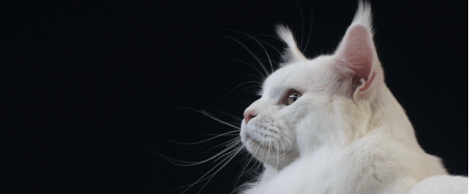
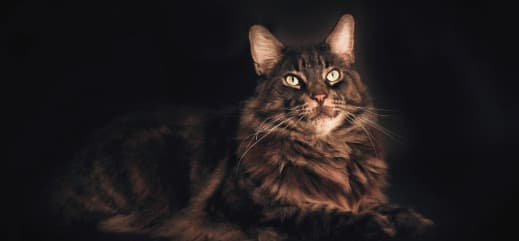

Питомцы
Все представители нашего питомника имеют ветеринарный паспорт
с отметками о прививках и документ с родословной
- 
- 
- Мейн-кун, мальчик, коричневого цвета.
Особенности породы
Мейн-Кун - это порода, которая вызывает
к себе уважение.
Приобретая в свой дом
этого питомца,
вы получите
умное животное, которому нет равных

- Выполняет команды как
дрессированная собака - Вес может достигать
12 кг, а длина 1 м - Внешний вид этой кошки
похож на дикую рысь - Легко уживается в семьях с детьми
или другими животными
Почему именно мы?
Приобретая животное в нашем питомнике, вы получите
Об уходе
за Мейн-Куном
-
Шерсть
Мы разработали 8 правил, следуя которым, шерсть вашего
кота всегда будет блестящей, мягкой и послушной -
Когти
Нужно ли стричь когти? Это мы и выясним, плюс ко всему расскажем как подобрать идеальную когтеточку
-
Уши и глаза
Владельцам котов необходимо регулярно осматривать
ушки и глазасвоих питомцев, ведь это может быть
признаками заболевания -
Питание
В нашем питомнике существует два подхода: натуральное питание и питание
промышленными кормами,
но выбирать только вам
Наша команда
Все сотрудники нашего питомника дипломированые специалисты
в области фелинологии и ветеринарии
Серёжа Попов
Основатель питомника
Наш питомник занимается разведением Мейн-Кунов
на протяжении 15 лет.
Мы в ответе за каждого
приобретенного вами питомца
Вопрос-Ответ
Мы ответим на самые популярные ваши вопросы
-
Есть важная причина, почему котенка стоит забирать домой только после трех месяцев, — это вакцинация. Первые прививки животному делают в возрасте 8 недель. Ревакцинация проводится через 3–4 недели. То есть котенок, покидающий дом позднее 12 недель, максимально защищен от различных вирусов и инфекций.
Так что, чтобы в дома появился психически и физически здоровый котенок, игривый, жизнерадостный, самостоятельный и воспитанный, не спешите забирать его от кошки-мамы раньше трех месяцев.
-
Что такое резервирование? Резервирование - это внесение залога за выбранного котенка. Заводчик будет уверен в серьезности вашего решения, а вы получаете гарантию, что ваш будущий котенок никому не будут предлагаться. Залог – это невозвратная сумма ( но иногда случаются нюансы, когда задаток возвращается, смотрите ниже, в каких ситуациях) Поэтому вносите задаток только лишь в случае полной уверенности, что Вы готовы купить именно этого котенка. Сумма залога составляет 30% от стоимости котенка.
Переговоры по поводу резервирования и внесения залога ведутся только с тем человеком, который будет заниматься котенком лично, на протяжении всей его жизни. Ни родственники, ни друзья, ни спонсоры в качестве представителей не рассматриваются. Несовершенно летним и подросткам котята не продаются. Если Вы желаете сделать подарок, привозите с собой одариваемого. Договор будет заключаться конкретно с ним. Котята будут покидать питомник только после полного вакцинирования, чипирования и карантина!!! Предложения, а можно мы сами сделаем, не принимаются! Не тратьте не свое и не мое время в пустую, уважайте труд и время заводчика! Надеюсь на Ваше понимание!
-
На данный момент практически все продажи животных происходят через соц.сети и интернет. И зачастую, заводчик и потенциальный покупатель живут за тысячи километров друг от друга. Покупатель выбирает питомца согласно фото и видео. Общение происходит через мессенджеры. Связь поддерживается постоянно.
На все интересующие вопросы заводчик даст развёрнутый ответ , а так же предоставит видео подтверждение своих слов. Поэтому купить котёнка, при желании, даже если вы живете в другом городе не проблема. И в настоящее время совершенно реально.
-
Еще до того как любимца привели в Вашу квартиру, подумайте и составьте список покупок необходимых ему предметов. В него могут войти:
Миски для еды. В зоомагазинах их огромный выбор. Поэтому лучше заранее продумать какая именно подойдет Вашему питомцу.
Наполнители для туалета, если Вашему питомцу нужно пользоваться домашним туалетом. Принято считать, что в туалет дома ходят только представитель семейства кошачьих. Однако некоторые маленькие породы собак тоже неплохо приучаются к лотку. То же самое можно сказать и об очень маленьких щенках, которых некоторые хозяева в раннем возрасте «выгуливают» в собственном туалете.
Место для сна питомца. Если Вы хотите завести грызуна или птичку, то местом для их отдыха станет клетка. Если это кошка или собака, то в зоомагазинах можно найти специальные лежанки для таких животных разных размеров.
Приспособления для выгула питомца. Это могут быть всевозможные ошейники, поводки и намордники. Причем не стоит думать, что подобные вещи используются только для собак. Если Вы планируете гулять с кошкой или даже с хомячком, Вам могут пригодиться подобные предметы.
Корм и подкормки. Для каждого домашнего питомца разработан специализированный корм, а также комплекс витаминов для их нормального питания и роста. Хороший хозяин заботиться о здоровье своего любимца.
Отзывы
Серёжа Попов
Я выражаю огромную благодарность
вашему
питомнику.
Мой Феликс
невероятно
умен
и воспитан. Огромным плюсом
питомника
является возможность консультироваться
в любое время